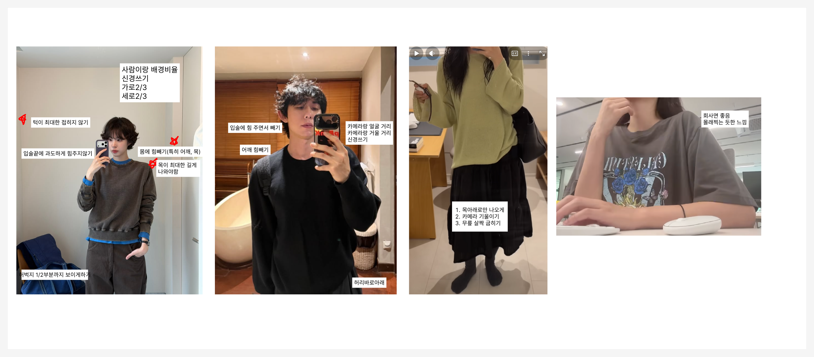

nadllog · 01
촬영 컨셉
브이로그 형식
컨셉 1
한국 사는(or 제주도 사는) 30대 회사원
남자 출근 패션,
출근 브이로그로 일단 시작.
nadllog · 02
반응 좋았던 사진
좋아요 수 참고 — 이게 1천 · 이게 800 · 이게 좋아요 532 · 이 사진이 좋아요 2.5천, 댓글 384개
nadllog · 03
촬영 포즈 가이드

사람이랑 배경 비율 신경쓰기 (가로 2/3, 세로 2/3)
턱이 최대한 접히지 않기
입술 끝에 과도하게 힘주지 않기
몸에 힘빼기 (특히 어깨, 목)
목이 최대한 길게 나와야 함
허벅지 1/2 부분까지 보이게 하기
입술에 힘 주면서 빼기 · 어깨 힘빼기
카메라랑 얼굴 거리, 카메라랑 거울 거리 신경쓰기
허리 바로 아래
목 아래로만 나오게 · 카메라 기울이기 · 무릎 살짝 굽히기
회사면 좋음 — 몰래 찍는 듯한 느낌